Layout structure
Page <head /> contains Metadata and CSS bundle files for theme. We use special section AddLocalStyles, to import styles for specific plugins on pages that need it.
<!DOCTYPE html>
<html>
<head>
<meta http-equiv="Content-Type" content="text/html; charset=utf-8"/>
<meta charset="utf-8" />
<meta name="viewport" content="width=device-width, initial-scale=1.0">
<title>INSPINIA | @ViewBag.Title</title>
<!-- Add local styles, mostly for plugins css file -->
@if (IsSectionDefined("AddLocalStyles"))
{@RenderSection("AddLocalStyles", required: false)}
<!-- Primary Inspinia style -->
@Styles.Render("~/Content/css")
@Styles.Render("~/font-awesome/css")
</head>
Main file structure
IMPORTANT - Main stucture of _Layout.cshtml file.
<!-- Skin configuration box -->
@Html.Partial("_SkinConfig")
<!-- Wrapper-->
<!-- PageClass give you ability to specify custom style for specific view based on action -->
<div id="wrapper" class="@Html.PageClass()">
<!-- Navigation -->
@Html.Partial("_Navigation")
<!-- Page wraper -->
<div id="page-wrapper" class="gray-bg @ViewBag.SpecialClass">
<!-- Top Navbar -->
@Html.Partial("_TopNavbar")
<!-- Main view -->
@RenderBody()
<!-- Footer -->
@Html.Partial("_Footer")
</div>
<!-- End page wrapper-->
<!-- Right Sidebar -->
@Html.Partial("_RightSidebar")
</div>
<!-- End wrapper-->
Page Script
On bottom of file are bundle script located. _Layout.cshtml contains all major plugin scripts and Inspinia scripts.
In section Scripts, will be import scripts for specific plugins on pages that need it.
<!-- Section for main scripts render -->
@Scripts.Render("~/bundles/jquery")
@Scripts.Render("~/bundles/bootstrap")
@Scripts.Render("~/plugins/slimScroll")
@Scripts.Render("~/bundles/inspinia")
<!-- Skin config script - only for demo purpose-->
@Scripts.Render("~/bundles/skinConfig")
<!-- Handler for local scripts -->
@RenderSection("scripts", required: false)
Adding Plugin (special styles file and scripts)
To add for example iCheck plugin (plugin for custom checkbox input) at the bottom of page (view) you have to specifie Styles and Scripts with name plugin as example below. Or if you
want to add it to entire app you can add it to _Layout file.
@section Styles {
@Styles.Render("~/plugins/iCheckStyles")
}
@section Scripts {
@Scripts.Render("~/plugins/iCheck")
<script type="text/javascript">
$(document).ready(function () {
// Local scripts
});
</script>
}
If you need any help with render section feel free to write me at support@webapplayers.com.
BundleConfig.cs
Bundle contains all neccesery scripts and style. You can add it to any part of your app. With convention:
CSS styles: @Styles.Render("~/plugins/{PluginName}Styles")
JS scripts: @Scripts.Render("~/plugins/{PluginName}")
Please note that some plugin have own images so path to the bundle has to be relative for example ionRangeSlider plugins.
// CSS style (bootstrap/inspinia)
bundles.Add(new StyleBundle("~/Content/css").Include(
"~/Content/bootstrap.min.css",
"~/Content/animate.css",
"~/Content/style.css"));
// Font Awesome icons
bundles.Add(new StyleBundle("~/font-awesome/css").Include(
"~/fonts/font-awesome/css/font-awesome.min.css", new CssRewriteUrlTransform()));
// jQuery
bundles.Add(new ScriptBundle("~/bundles/jquery").Include(
"~/Scripts/jquery-3.1.1.min.js"));
// jQueryUI CSS
bundles.Add(new ScriptBundle("~/Scripts/plugins/jquery-ui/jqueryuiStyles").Include(
"~/Scripts/plugins/jquery-ui/jquery-ui.min.css"));
// jQueryUI
bundles.Add(new StyleBundle("~/bundles/jqueryui").Include(
"~/Scripts/plugins/jquery-ui/jquery-ui.min.js"));
// Bootstrap
bundles.Add(new ScriptBundle("~/bundles/bootstrap").Include(
"~/Scripts/bootstrap.min.js"));
// Inspinia script
bundles.Add(new ScriptBundle("~/bundles/inspinia").Include(
"~/Scripts/plugins/metisMenu/metisMenu.min.js",
"~/Scripts/plugins/pace/pace.min.js",
"~/Scripts/app/inspinia.min.js"));
// Inspinia skin config script
bundles.Add(new ScriptBundle("~/bundles/skinConfig").Include(
"~/Scripts/app/skin.config.min.js"));
// SlimScroll
bundles.Add(new ScriptBundle("~/plugins/slimScroll").Include(
"~/Scripts/plugins/slimscroll/jquery.slimscroll.min.js"));
// Peity
bundles.Add(new ScriptBundle("~/plugins/peity").Include(
"~/Scripts/plugins/peity/jquery.peity.min.js"));
// Video responsible
bundles.Add(new ScriptBundle("~/plugins/videoResponsible").Include(
"~/Scripts/plugins/video/responsible-video.js"));
// Lightbox gallery css styles
bundles.Add(new StyleBundle("~/Content/plugins/blueimp/css/").Include(
"~/Content/plugins/blueimp/css/blueimp-gallery.min.css"));
// Lightbox gallery
bundles.Add(new ScriptBundle("~/plugins/lightboxGallery").Include(
"~/Scripts/plugins/blueimp/jquery.blueimp-gallery.min.js"));
// Sparkline
bundles.Add(new ScriptBundle("~/plugins/sparkline").Include(
"~/Scripts/plugins/sparkline/jquery.sparkline.min.js"));
// Morriss chart css styles
bundles.Add(new StyleBundle("~/plugins/morrisStyles").Include(
"~/Content/plugins/morris/morris-0.4.3.min.css"));
// Morriss chart
bundles.Add(new ScriptBundle("~/plugins/morris").Include(
"~/Scripts/plugins/morris/raphael-2.1.0.min.js",
"~/Scripts/plugins/morris/morris.js"));
// Flot chart
bundles.Add(new ScriptBundle("~/plugins/flot").Include(
"~/Scripts/plugins/flot/jquery.flot.js",
"~/Scripts/plugins/flot/jquery.flot.tooltip.min.js",
"~/Scripts/plugins/flot/jquery.flot.resize.js",
"~/Scripts/plugins/flot/jquery.flot.pie.js",
"~/Scripts/plugins/flot/jquery.flot.time.js",
"~/Scripts/plugins/flot/jquery.flot.spline.js"));
// Rickshaw chart
bundles.Add(new ScriptBundle("~/plugins/rickshaw").Include(
"~/Scripts/plugins/rickshaw/vendor/d3.v3.js",
"~/Scripts/plugins/rickshaw/rickshaw.min.js"));
// ChartJS chart
bundles.Add(new ScriptBundle("~/plugins/chartJs").Include(
"~/Scripts/plugins/chartjs/Chart.min.js"));
// iCheck css styles
bundles.Add(new StyleBundle("~/Content/plugins/iCheck/iCheckStyles").Include(
"~/Content/plugins/iCheck/custom.css"));
// iCheck
bundles.Add(new ScriptBundle("~/plugins/iCheck").Include(
"~/Scripts/plugins/iCheck/icheck.min.js"));
// dataTables css styles
bundles.Add(new StyleBundle("~/Content/plugins/dataTables/dataTablesStyles").Include(
"~/Content/plugins/dataTables/dataTables.bootstrap.css",
"~/Content/plugins/dataTables/dataTables.responsive.css",
"~/Content/plugins/dataTables/dataTables.tableTools.min.css"));
// dataTables
bundles.Add(new ScriptBundle("~/plugins/dataTables").Include(
"~/Scripts/plugins/dataTables/jquery.dataTables.js",
"~/Scripts/plugins/dataTables/dataTables.bootstrap.js",
"~/Scripts/plugins/dataTables/dataTables.responsive.js",
"~/Scripts/plugins/dataTables/dataTables.tableTools.min.js"));
// jeditable
bundles.Add(new ScriptBundle("~/plugins/jeditable").Include(
"~/Scripts/plugins/jeditable/jquery.jeditable.js"));
// jqGrid styles
bundles.Add(new StyleBundle("~/Content/plugins/jqGrid/jqGridStyles").Include(
"~/Content/plugins/jqGrid/ui.jqgrid.css"));
// jqGrid
bundles.Add(new ScriptBundle("~/plugins/jqGrid").Include(
"~/Scripts/plugins/jqGrid/i18n/grid.locale-en.js",
"~/Scripts/plugins/jqGrid/jquery.jqGrid.min.js"));
// codeEditor styles
bundles.Add(new StyleBundle("~/plugins/codeEditorStyles").Include(
"~/Content/plugins/codemirror/codemirror.css",
"~/Content/plugins/codemirror/ambiance.css"));
// codeEditor
bundles.Add(new ScriptBundle("~/plugins/codeEditor").Include(
"~/Scripts/plugins/codemirror/codemirror.js",
"~/Scripts/plugins/codemirror/mode/javascript/javascript.js"));
// codeEditor
bundles.Add(new ScriptBundle("~/plugins/nestable").Include(
"~/Scripts/plugins/nestable/jquery.nestable.js"));
// validate
bundles.Add(new ScriptBundle("~/plugins/validate").Include(
"~/Scripts/plugins/validate/jquery.validate.min.js"));
// fullCalendar styles
bundles.Add(new StyleBundle("~/plugins/fullCalendarStyles").Include(
"~/Content/plugins/fullcalendar/fullcalendar.css"));
// fullCalendar
bundles.Add(new ScriptBundle("~/plugins/fullCalendar").Include(
"~/Scripts/plugins/fullcalendar/moment.min.js",
"~/Scripts/plugins/fullcalendar/fullcalendar.min.js"));
// vectorMap
bundles.Add(new ScriptBundle("~/plugins/vectorMap").Include(
"~/Scripts/plugins/jvectormap/jquery-jvectormap-1.2.2.min.js",
"~/Scripts/plugins/jvectormap/jquery-jvectormap-world-mill-en.js"));
// ionRange styles
bundles.Add(new StyleBundle("~/Content/plugins/ionRangeSlider/ionRangeStyles").Include(
"~/Content/plugins/ionRangeSlider/ion.rangeSlider.css",
"~/Content/plugins/ionRangeSlider/ion.rangeSlider.skinFlat.css"));
// ionRange
bundles.Add(new ScriptBundle("~/plugins/ionRange").Include(
"~/Scripts/plugins/ionRangeSlider/ion.rangeSlider.min.js"));
// dataPicker styles
bundles.Add(new StyleBundle("~/plugins/dataPickerStyles").Include(
"~/Content/plugins/datapicker/datepicker3.css"));
// dataPicker
bundles.Add(new ScriptBundle("~/plugins/dataPicker").Include(
"~/Scripts/plugins/datapicker/bootstrap-datepicker.js"));
// nouiSlider styles
bundles.Add(new StyleBundle("~/plugins/nouiSliderStyles").Include(
"~/Content/plugins/nouslider/jquery.nouislider.css"));
// nouiSlider
bundles.Add(new ScriptBundle("~/plugins/nouiSlider").Include(
"~/Scripts/plugins/nouslider/jquery.nouislider.min.js"));
// jasnyBootstrap styles
bundles.Add(new StyleBundle("~/plugins/jasnyBootstrapStyles").Include(
"~/Content/plugins/jasny/jasny-bootstrap.min.css"));
// jasnyBootstrap
bundles.Add(new ScriptBundle("~/plugins/jasnyBootstrap").Include(
"~/Scripts/plugins/jasny/jasny-bootstrap.min.js"));
// switchery styles
bundles.Add(new StyleBundle("~/plugins/switcheryStyles").Include(
"~/Content/plugins/switchery/switchery.css"));
// switchery
bundles.Add(new ScriptBundle("~/plugins/switchery").Include(
"~/Scripts/plugins/switchery/switchery.js"));
// chosen styles
bundles.Add(new StyleBundle("~/Content/plugins/chosen/chosenStyles").Include(
"~/Content/plugins/chosen/chosen.css"));
// chosen
bundles.Add(new ScriptBundle("~/plugins/chosen").Include(
"~/Scripts/plugins/chosen/chosen.jquery.js"));
// knob
bundles.Add(new ScriptBundle("~/plugins/knob").Include(
"~/Scripts/plugins/jsKnob/jquery.knob.js"));
// wizardSteps styles
bundles.Add(new StyleBundle("~/plugins/wizardStepsStyles").Include(
"~/Content/plugins/steps/jquery.steps.css"));
// wizardSteps
bundles.Add(new ScriptBundle("~/plugins/wizardSteps").Include(
"~/Scripts/plugins/staps/jquery.steps.min.js"));
// dropZone styles
bundles.Add(new StyleBundle("~/Content/plugins/dropzone/dropZoneStyles").Include(
"~/Content/plugins/dropzone/basic.css",
"~/Content/plugins/dropzone/dropzone.css"));
// dropZone
bundles.Add(new ScriptBundle("~/plugins/dropZone").Include(
"~/Scripts/plugins/dropzone/dropzone.js"));
// summernote styles
bundles.Add(new StyleBundle("~/plugins/summernoteStyles").Include(
"~/Content/plugins/summernote/summernote.css",
"~/Content/plugins/summernote/summernote-bs3.css"));
// summernote
bundles.Add(new ScriptBundle("~/plugins/summernote").Include(
"~/Scripts/plugins/summernote/summernote.min.js"));
// toastr notification
bundles.Add(new ScriptBundle("~/plugins/toastr").Include(
"~/Scripts/plugins/toastr/toastr.min.js"));
// toastr notification styles
bundles.Add(new StyleBundle("~/plugins/toastrStyles").Include(
"~/Content/plugins/toastr/toastr.min.css"));
// color picker
bundles.Add(new ScriptBundle("~/plugins/colorpicker").Include(
"~/Scripts/plugins/colorpicker/bootstrap-colorpicker.min.js"));
// color picker styles
bundles.Add(new StyleBundle("~/Content/plugins/colorpicker/colorpickerStyles").Include(
"~/Content/plugins/colorpicker/bootstrap-colorpicker.min.css"));
// image cropper
bundles.Add(new ScriptBundle("~/plugins/imagecropper").Include(
"~/Scripts/plugins/cropper/cropper.min.js"));
// image cropper styles
bundles.Add(new StyleBundle("~/plugins/imagecropperStyles").Include(
"~/Content/plugins/cropper/cropper.min.css"));
// jsTree
bundles.Add(new ScriptBundle("~/plugins/jsTree").Include(
"~/Scripts/plugins/jsTree/jstree.min.js"));
// jsTree styles
bundles.Add(new StyleBundle("~/Content/plugins/jsTree").Include(
"~/Content/plugins/jsTree/style.css"));
// Diff
bundles.Add(new ScriptBundle("~/plugins/diff").Include(
"~/Scripts/plugins/diff_match_patch/javascript/diff_match_patch.js",
"~/Scripts/plugins/preetyTextDiff/jquery.pretty-text-diff.min.js"));
// Idle timer
bundles.Add(new ScriptBundle("~/plugins/idletimer").Include(
"~/Scripts/plugins/idle-timer/idle-timer.min.js"));
// Tinycon
bundles.Add(new ScriptBundle("~/plugins/tinycon").Include(
"~/Scripts/plugins/tinycon/tinycon.min.js"));
Options
Inspinia provide few option for you layout app. There are:
- Fixed sidebar
- Fixed navbar
- Fixed footer
- RTL support
- Layout 2 (top navigation)
- Off canvas menu
- Skins
Fixed sidebar
Fixed sidebar is a sidebar that is sticked on screen.
To add fixed sidebar you need to add .fixed-sidebar class to body.
<body class="fixed-sidebar">
Next we will need to add slimScroll handle for sidebar. Go to scripts/app/inspinia.js file and find // Fixed Sidebar comment and uncomment function below it so it will look like this:
// Fixed Sidebar
// unComment this only whe you have a fixed-sidebar
$(window).bind("load", function() {
if($("body").hasClass('fixed-sidebar')) {
$('.sidebar-collapse').slimScroll({
height: '100%',
railOpacity: 0.9,
});
}
})
Be sure that you have included slimScroll plugin to your index.cshtml file:
@Scripts.Render("~/plugins/slimScroll")
Fixed navbar
Fixed navbar is a top navbar that is sticked on screen.
To add fixed sidebar you need to add .fixed-nav class to body.
<body class="fixed-nav">
Next we will need to change navbar from static to fixed in Shared/_TopNavbar.cshtml file. Change .navbar-static-top class to navbar-fixed-top
<nav class="navbar navbar-fixed-top" role="navigation">
Fixed navbar 2
Fixed navbar 2 is a top navbar that is sticked on screen and it's width is the same as the width of wrapper
To add fixed sidebar you need to add .fixed-nav class and .fixed-nav-basic class to body.
<body class="fixed-nav fixed-nav-basic">
Next we will need to change navbar from static to fixed in Shared/_TopNavbar.cshtml file. Change .navbar-static-top class to navbar-fixed-top
<nav class="navbar navbar-fixed-top" role="navigation">
Fixed navbar 2 works only on primary layout
Fixed footer
Fixed footer is a bottom footer that is sticked on screen.
To add fixed bottom footer you just need to add .fixed class to footer class.
<div class="footer fixed">
Right-to-Left Language Support
Adding support for language written in a Right-To-Left (RTL) direction.
To add RTL support you will need to add new .rtls class to body element
<body class="rtls">
Next you will need to add new bootstrap rtl support library bootstrap-rtl. Add new link to css file just below the Content/css from bootstrap in index.cshtml page like this:
@Styles.Render("~/Content/css")
<link href="~/Content/plugins/bootstrap-rtl/bootstrap-rtl.min.css" rel="stylesheet">
After that you will have RTL support similar to this:

Layout 2
Layout 2 is a top navigation with centered content layout.
For layout 2 we prepared special examples files in Shared folder
-
_Layout_2.cshtml
-
_TopNavbar2.cshtml
To use layout 2 all you need to do is to specify new layout in top of the page:
@{
Layout = "~/Views/Shared/_Layout_2.cshtml";
ViewBag.Title = "Dashboard v.4";
}
Layout 2 with example code look like this:

Off canvas menu
Off canvas menu is a menu that not change the width of main wrapper page. It appear on top of the page.
To use off canvas menu you just need to use _Layout4.cshtml. The body has special .canvas-manu class and it include special _NavigationOffCanvas.
Skins
Inspinai theme has 3 diferent skins
To change skin you just have to add skin class to body element.
For example: to add skin Blue skin you just need to add .skin-1 class to body element.
In LESS files skins.less you can find style for the skin. Below is a representation of css classes demand color skin.
.skin-1 - Blue Light.skin-2 - Inspinia Ultra {for support with Inspinai Ultra please contact with support@webapplayers.com}.skin-3 - Yellow/purple.md-skin - Material Design Skin (In demo Inspinia Material Design version has also fixed sidebar and fixed navbar option)- Defaut skin does not need any class
Theme config
Theme config is the configuration box for setting options in live preview. It is placed in the right side of page with green icon.
To not add html code to all pages we just add js script to append the config box. The function is located in Scripts/app/inspinia.js file with comment // Append config box / Only for demo purpose
If you want to remove the config box all you need to do is to remove function below this comment.
CodeTemplates and Scaffolding
In CodeTemplates we add special customized template for Scaffolding. If you run app and go to Scaffolding page then you will see a full generated code and views with customized look and feel
for Inspinia theme.
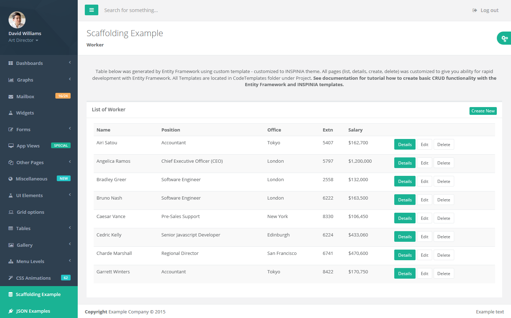
Scaffolding Tutorial
In this section we will show you have to go throw scaffolding with customized template on Inspinia MVC5 SeedProject.
When you open Inspinia Seed Project you will see in Solution Explorer folder CodeTemplates.
This folder contains scaffolding templates. This folder must have the CodeTemplates name.
Entity framework first check for this folder in solution and if he find it he will use templates from there.
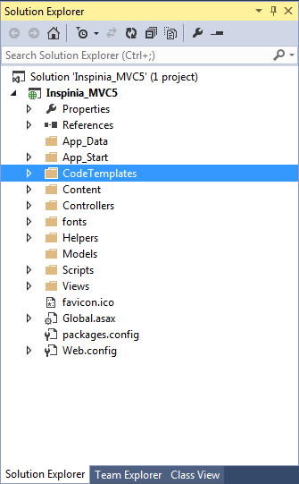
Lets add simple model for our demo purpose.
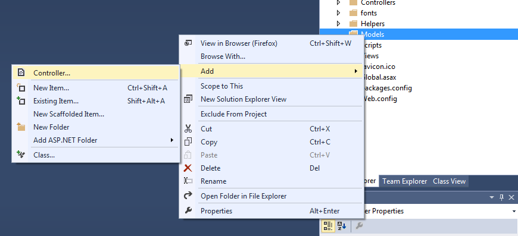
Select Empty controller
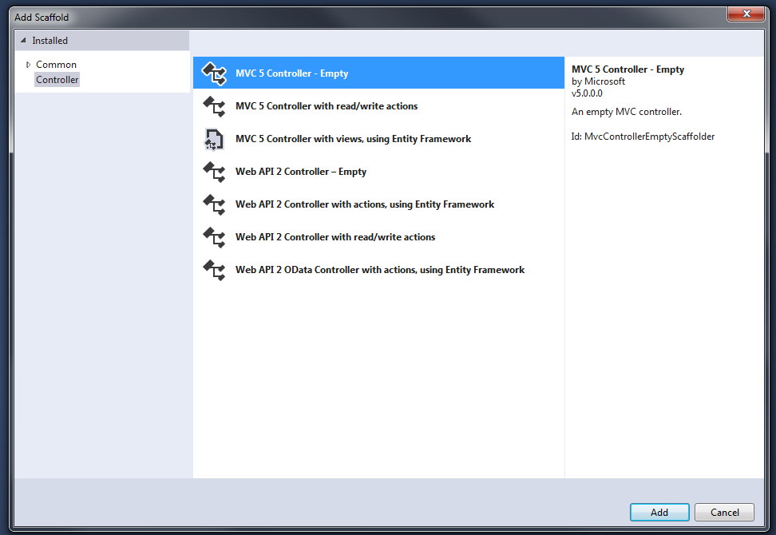
Enter controller name
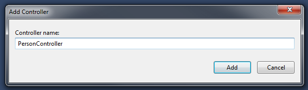
Write bacis Person model with {Id, FirstName, LastName, Position}
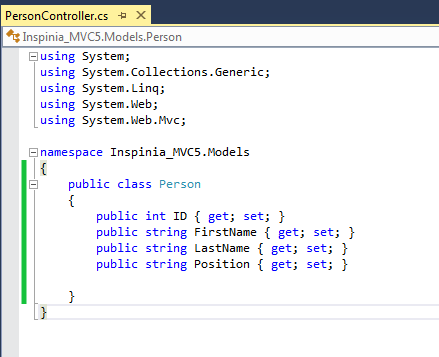
After save build project

Next creat scaffolding controller and views
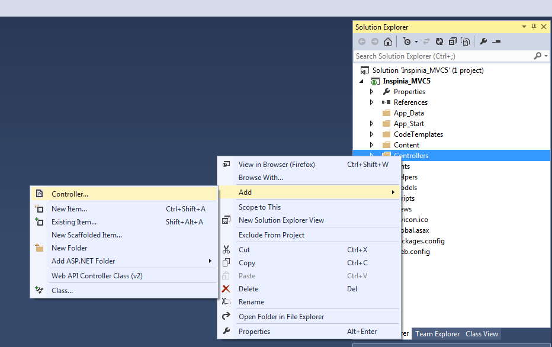
Select MVC5 Controller with view, using Entity Framework
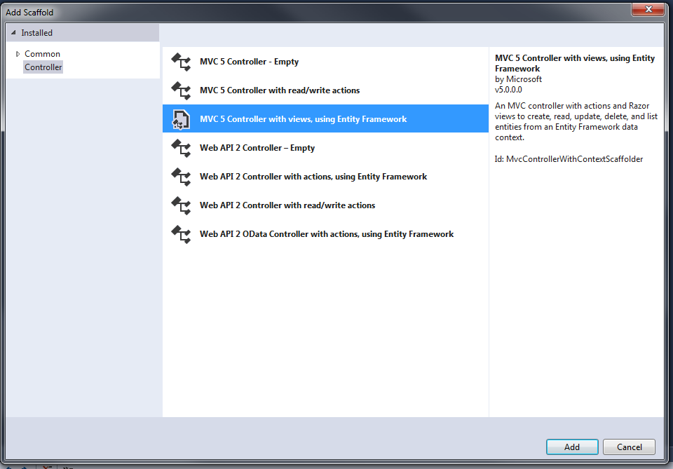
Add name and use Person model
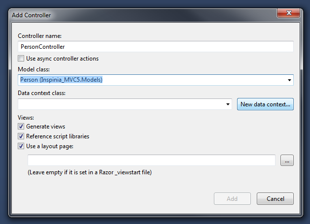
Next click to New data context and set a name for context
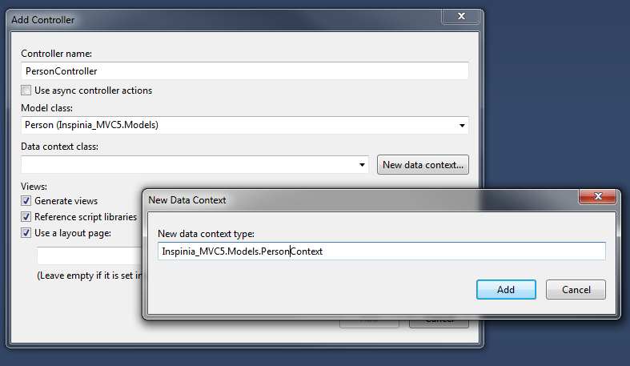
Once more build project to creat connection

After that go to _Navigation file and add menu item to Person view as below
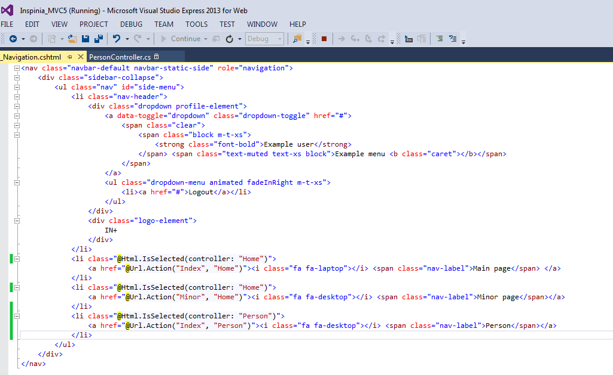
When you run app go to Person menu and you will see a empty table. Click create new
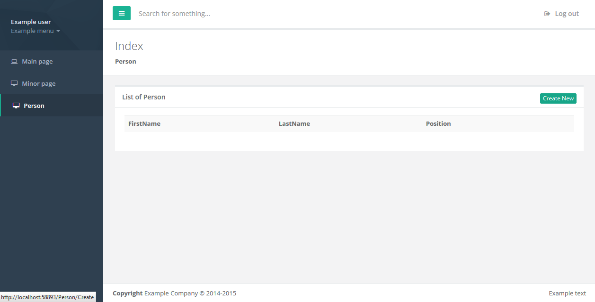
Add some example data
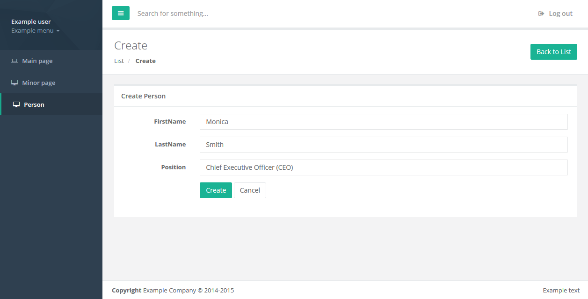
After that you will have a first person in your database
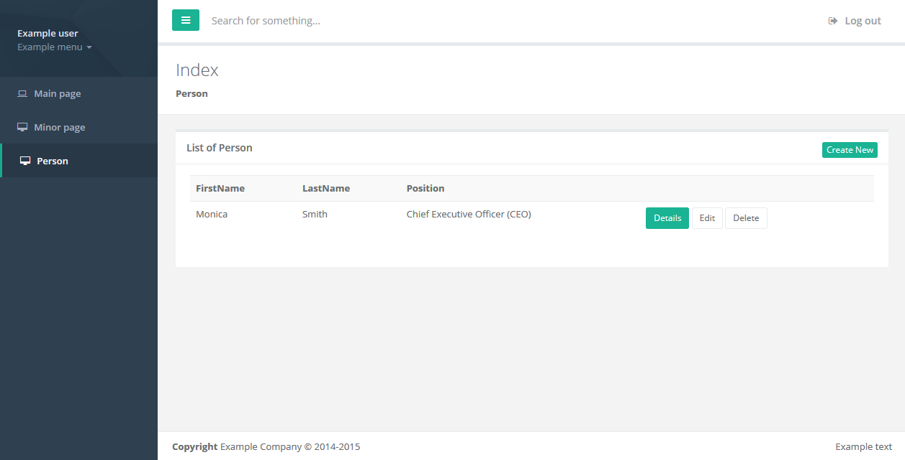
Using Scaffolding and Inspinia templates you can creat simple and fast basic app wtih nice look and feal writing only a model!!
MVC_Seed_Project
It is an application skeleton for a typical ASP.NET MVC5 web app. You can use it to quickly bootstrap your mvc webapp projects and dev environment for these projects.
It is a best start for new app. It has all needed scripts and style.
Change log 2.6.2 -> 2.7
New view files
- Views/AppViews/ActivityStream.cshtml
- Views/Miscellaneous/PasswordMeter.cshtml
- Views/Miscellaneous/SpinnersUsage.cshtml
- Views/Miscellaneous/TextSpinners.cshtml
Changed views files
- Views/Shared/_Navigation.cshtml - add new menu elements for new views
- Views/UIElements/Icons.cshtml - update font awesome icons to new set
- Views/Miscellaneous/AgileBoard.cshtml - add support for touch gestures - @Scripts.Render("~/plugins/touchPunch")
- Views/UIElements/DraggablePanels.cshtml - add support for touch gestures - @Scripts.Render("~/plugins/touchPunch")
- Views/UIElements/ResizeablePanels.cshtml - add support for touch gestures - @Scripts.Render("~/plugins/touchPunch")
- Views/Forms/Advanced.cshtml - add new example for switchery control
- Views/Miscellaneous/LoadingButtons.cshtml - update bind method for ladda example buttons
- Views/UIElements/HelperClasses.cshtml - change css name in border examples
- Views/Dashboards/Dashboard_3.cshtml - update css class of sidebar
- Views/Layouts/Index.cshtml - correct typos in image names and descriptions
Changed Inspinia js files
- inspinia.js - update collapse-link click functions
- inspinia.js - update fix_height functions
Updates
- plugins/dropzone
- plugins/fullcalendar
- plugins/chartJs
- plugins/summernote
- content/animate.css
Updates
- Scripts/jquery-3.1.1.min.js
- Scripts/plugins/dataTables / CSS
- Scripts/plugins/switchery / CSS
- Scripts/plugins/jquery-ui / CSS
- Scripts/plugins/steps / CSS
- Scripts/plugins/validation
- fonts/font-awesome
New plugins
- Scripts/plugins/touchpunch
- Scripts/plugins/pwstrength
- Content/plugins/textSpinners
Updates Bundle
- App_start/BundleConfig.cs - Add bundle for new plugins
CSS/LESS/SCSS/SASS
- Add styles for new pages
- Fix jumping menu on landing page
- Fix bg-colors
- Remove rules for support old IE
- Add styles for third level menu on md-skin
- Improve select2 styles
- Improve menu style
- Clear overwrite native media-body classes
- Improve few styles for IE
- Improve style for summernote
- Correct selected typo
- Fix chat-avatar class rules
- Fix typo in css preprocessor variables
Change log 2.6 -> 2.6.2
Updates
- Bootstrap to 3.3.7
CSS/LESS/SCSS/SASS
- Fix the issue with hidden href on mobile mini navbar
- Fix the flickering menu
- Fix Safari modal issue
- Fix Summernote fullscreen mode
- Fix css width helper classes
- Improve content height on fixed navbar
- Improve landing page on mobile view
Change log 2.5 -> 2.6
New view files
- Views/Forms/Autocomplete.cshtml
- Views/Miscellaneous/Datamaps.cshtml
- Views/Miscellaneous/PdfViewer.cshtml
- Views/Miscellaneous/SocialButtons.cshtml
- Views/UIElements/HelperClasses.cshtml
Changed views files
- Views/Shared/_Navigation.cshtml - add new menu elements for new views
- Forms/Dashboard_1.cshtml - update script for new Chartjs version
- Forms/Dashboard_3.cshtml - update script for new Chartjs version
- Forms/Dashboard_4.cshtml - update script for new Chartjs version
- Forms/Dashboard_4_1.cshtml - update script for new Chartjs version
- Graphs/Chartjs.cshtml - update script for new Chartjs version
- Forms/Advanced.cshtml - add new features: input tag, dual select
- Forms/FileUpload.cshtml - add new input components, update dropzon
- Tables/DataTables.cshtml - remove jeditable library
New Inspinia files
- pdf/example.pdf
- Scripts/api/typehead_collection.json
Changed Inspinia js files
- inspinia.js - update click functions
Updates
- plugins/dropzone
- plugins/fullcalendar
- plugins/chartJs
- plugins/summernote
- content/animate.css
New plugins
- plugins/bootstrap-taginput
- plugins/dualListbox
- plugins/pdfjs
- plugins/topojson
- plugins/typehead
- plugins/bootstrapSocial
Updates Bundle
- App_start/BundleConfig.cs - Add bundle for new plugins
CSS/LESS/SCSS/SASS
- Add styles for new pages
- Fix menu jumping issue
- Improve print mode for Firefox
- Improve chosen colors
- Fix boxes layout with md-skin
- Improve custom swithc style
- Add few new css classes - helper classes
Change log 2.4 -> 2.5
2.5 version fully focused on update AngularJS projects.
New features and views will be added to separate 2.6 version.
Change log 2.3 -> 2.4
New view files
- Views/Graphs/C3charts.cshtml
- Views/Ecommerce/Cart.cshtml
- Views/UIElements/ResizeablePanels.cshtml
- Views/Forms/Markdown.cshtml
- Views/Miscellaneous/Clipboard.cshtml
- Views/Miscellaneous/I18support.cshtml
- Views/Miscellaneous/LoadingButtons.cshtml
- Views/Miscellaneous/Tour.cshtml
- Views/Miscellaneous/Truncate.cshtml
Changed views files
- Views/Shared/_Navigation.cshtml - add new menu elements for new views
- Miscellaneous/AgileBoard.cshtml - add example code for serialize list
- Forms/Advanced.cshtml - add new Touch spin control
- Landing/Index.cshtml - update page-scroll click event to close menu on select in mobile
- Shared/_SkinConfig.cshtml - add new option for fixed nav bar
- Tables/DataTables.cshtml - replace old swf buttons with new button plugin (update datatables library)
- UIElements/Video.cshtml - add script for handle full screen video option
New Inspinia js files
- locales/en.json
- locales/es.json
Changed Inspinia js files
- inspinia.js - update fix_height function
- inspinia.js - update SmoothlyMenu function
Updates
- plugins/bootstrap - update to 3.3.6
- plugins/dataTables - create on compact datatables generate in official builder: https://datatables.net/download/index
- plugins/pace - update to 1.0.2
New plugins
- plugins/c3 (with css files)
- plugins/bootstrap-markdow (with css files)
- plugins/d3
- plugins/clipboard
- plugins/dotdotdot
- plugins/i18next
- plugins/ladda (with css files)
- plugins/touchspin (with css files)
- plugins/bootstrapTour (with css files)
New images
- Images/flags- Set of flags images
Updates Bundle
- App_start/BundleConfig.cs - Add bundle for new plugins
CSS/LESS/SCSS/SASS
- Add styles for new pages
- Fix buttons shadow on Chrome
- Fix dropdown text colour on md-skin
- Fix pace.js on fixed navbar option
- Fix few glitch animation effect
- Improve nav-tabs on mobile devices
- Fix second level menu on md-skin
- Improve RTL mode
- Add new fixed navbar option
- Ipmore print mode
Change log 2.0/2.1 -> 2.2
Change log 2.2 -> 2.3
New view files
- Views/AppViews/Contacts2.cshtml
- Views/AppViews/Profile2.cshtml
- Views/AppViews/VoteList.cshtml
- Views/Miscellaneous/Masonry.cshtml
- Views/Ecommerce/ProductDetail.cshtml
- Views/Ecommerce/Payments.cshtml
- Views/Gallery/SlickCarusela.cshtml
- Views/Dashboards/Dashboard_5.cshtml
Changed views files
- Views/Shared/_Navigation.cshtml - add new menu elements for new views
- Views/UIElements/TablesPanels.cshtml - add example of fullscreen panel and slim scroll panel
- Views/Forms/Advanced.cshtml - Add select2 examples
New Inspinia js files
- No new files
Changed Inspinia js files
- Scripts/app/inspinia.js - Add function for handle full screen ibox
Updates
- Bootstrap - update to 3.3.5
- Scripts/plugins/dataTables - update to 1.10.8
New plugins
- Scripts/plugins/slick (with css files)
- Scripts/plugins/select2 (with css files)
- Scripts/plugins/masonry
New images
- Content/patterns- Add images for header in Material Design skin
New Controllers
- No new files
Update Controllers
- Controllers/AppViews.csController - add new pages for views
- Controllers/MiscellaneousController.cs - add new pages for views
- Controllers/EcommerceController.cs - add new pages for views
- Controllers/DashboardsController.cs - add new pages for views
Updates Bundle
- App_start/BundleConfig.cs - Add bundle for new plugins
CSS/SCSS/SASS
- Add styles for new pages
- Add new md-skin styles
- Fix ibox-tools when title is large
- Fix landing page menu on small devices
- Fix modal open backdrop with animate.css effect
- Fix dropdown orientation under ibox
- Fix profile menu on fixed sidebar
Change log 2.0/2.1 -> 2.2
New view files
- Views/Graphs/Chartist.cshtml
- Views/Metrics/Index.cshtml
- Views/AppViews/SocialFeed.cshtml
- Views/Miscellaneous/SweetAlert.cshtml
- Views/Tables/FooTables.cshtml
- Views/UIElements/Tabs.cshtml
- Views/Landing/Index.cshtml (incorporate to admin)
- Views/Ecommerce/Orders.cshtml
- Views/Ecommerce/ProductEdit.cshtml
- Views/Ecommerce/ProductsGrid.cshtml
- Views/Ecommerce/ProductsList.cshtml
Changed views files
- Views/Shared/_Navigation.cshtml - add new menu elements for new views
- Views/Shared/_Navigation.cshtml - added ".metismenu" class to nav element id="side-menu" (new version of metisMenu)
- Views/UIElements/TablesPanels.cshtml - add example of footer to panel and initial collapsed panel
- Views/Miscellaneous/Chat_view.cshtml - Add left/right class to chat panels
- Views/AppViews/Article.cshtml - Add example of comments section
- Views/Landing/Index.cshtml - Add new sections: timeline and comments
- Views/Forms/Advanced.cshtml - Add new new plugins
New Inspinia js files
- No new files
Changed Inspinia js files
- Scripts/app/inspinia.js - Update fix_height for handle height wrapper on fixed-nav
Updates
- Scripts/plugins/metisMenu - update to 2.0.2
- Scripts/plugins/slimscrol - update to 1.3.6
- Scripts/plugins/jvectormap - update to 2.0.2
- Scripts/plugins/fullcalendar/moment.min.js - update to 2.9.0
New plugins
- Scripts/plugins/clockpicker (with css files)
- Scripts/plugins/daterangepicker (with css files)
- Scripts/plugins/footable (with css files)
- Scripts/plugins/sweetalert (with css files)
- Scripts/plugins/chartist
- Content/plugins/awesome-bootstrap-checkbox
New images
- Content/landing - Full folder of images used in landing page
New Controllers
- Controllers/LandingController.cs
- Controllers/EcommerceController.cs
- Controllers/MetricsController.cs
Update Controllers
- Controllers/AppViews.cs - add new pages for views
- Controllers/Graphs.cs - add new pages for views
- Controllers/Miscellaneous.cs - add new pages for views
- Controllers/Tables.cs - add new pages for views
- Controllers/UIElements.cs - add new pages for views
Updates Bundle
- App_start/BundleConfig.cs - Add bundle for new plugins
CSS
- Add styles for new pages
- Add new metisMenu style
- Add landing page styles
- Add chat-discussion left/right class
- Fix z-index of modal-dialog
- Fix margins on wrapper when fixed-nav is enabled
Change log 2.0 - 2.1
Version 2.1 is mainly focused on MeteorJS to provide Meteor version.
Please stay tuned for 2.2 version to get new features for ASP.NET MVC5 version.
Change log 1.9 -> 2.0
New view files
- Views/AppViews/Article.cshtml
- Views/AppViews/Blog.cshtml
- Views/AppViews/Clients.cshtml
- Views/AppViews/IssueTracker.cshtml
- Views/AppViews/OutlookView.cshtml
- Views/AppViews/TeamsBoard.cshtml
- Views/Layouts/OffCanvas.cshtml
- Views/Miscellaneous/AgileBoard.cshtml
- Views/Miscellaneous/Diff.cshtml
- Views/Miscellaneous/IdleTimer.cshtml
- Views/Miscellaneous/LiveFavicon.cshtml
- Views/Miscellaneous/Spinners.cshtml
- Views/Pages/ForgotPassword.cshtml
- Views/Shared/_Layout_3.cshtml
- Views/Shared/_Layout_4.cshtml
- Views/Shared/_NavigationOffCanvas.cshtml
- Views/Shared/_RightSidebar.cshtml
Changed views files
- Views/Shared/_Layout.cshtml - Add new right sidebar (@Html.Partial("_RightSidebar"))
- Views/Shared/_Navigation.cshtml - Add new menu elements
- Views/Shared/_TopNavbar.cshtml - Add new menu element for right sidebar
- Views/Dashboards/Dashboard_1.cshtml - Add small-chat element
- Views/Dashboards/Dashboard_2.cshtml - Add small-chat element
- Views/Dashboards/Dashboard_3.cshtml - Add small-chat element
- Views/Dashboards/Dashboard_4_1.cshtml - Add small-chat element
- Views/AppViews/Faq.cshtml - Fix the collapse effect - Create new div element
.faq-answer before p answer.
New Inspinia js files
- No new files
Changed Inspinia js files
- inspinia.js - Update fix_height function, add local storage handler, add functions for small-chat and right-sidebar
Updates
- Scripts/plugins/pace - update Pace to 1.0
- Scripts/morris/morris.js - update to 0.5
- bootstrap - update to 3.3.4
New plugins
- Scripts/plugins/diff_match_patch - Google algorithm for diff functionality
- Scripts/plugins/preetyTextDiff - jQuery plugin for dif
- Scripts/plugins/idle_timer
- Scripts/plugins/tinycon
New images
- img/full_height.jpg
- img/off_canvas.jpg
CSS/SCSS/SASS
- Add styles for new pages
- Improve btn-link
- Add colapsed class for initial collapsed ibox
- Fix margins for footer with sidebar fixed
- Fix responsive in login page
New Controllers
- No new files
Update Controllers
- Controllers/AppViews.cs - add new pages for views
- Controllers/Pages.cs - add new pages for views
- Controllers/Miscellaneous.cs - add new pages for views
- Controllers/Layouts.cs - add new pages for views
Updates Bundle
- App_start/BundleConfig.cs - Add bundle for new plugins, Update Font Awesome bundle
Change log 1.9 -> 1.9.2
Version 1.9.2 is mainly focused on Ruby on Rails to provide Rails version.
Please stay tuned for 2.0 version to get new features for Angular version.
Change log 1.8 -> 1.9
New view files
- Views/Miscellaneous/Chat_view.cshtml
- Views/Dashboard/Dashboard_4.cshtml
- Views/Dashboard/Dashboard_4_1.cshtml
- Views/Layouts/Index.cshtml
- Views/Pages/Login_2.cshtml
- Views/Miscellaneous/Tree_view.cshtml
- Views/Shared/_Layout_2.cshtml
- Views/Shared/_TopNavbar2.cshtml
Changed views files
- Views/Shared/_Navigation.cshtml - Changed to add new menu items
- Views/Gallery/BasciGallery.html - Replace old plugin with new blueimp lightbox gallery
New js files
- No new files
Changed js files
- No changes
Updates
- Scripts/plugins/flot - update Flot chart library to version 0.8.3
- font-awesome - update Font awesome to version 4.3.0
New plugins
- Scripts//plugins/blueimp - new plugin for lightbox gallery
- Scripts//plugins/jsTree - new plugin for tree view
New images
- Images/gallery - new set of images for lightbox gallery page
- Images/dashbbard4_1.jpg
- Images/dashbbard4_2.jpg
New Controllers
- Controllers/LayoutsController.cs - new controller for layout view
Update Controllers
- Controllers/MiscellaneousController.cs - add new pages for views
- Controllers/PagesController.cs - add new pages for views
Updates Bundle
- App_start/BundleConfig.cs - Some plugin have own images so path to the bundle has to be relative
Contact
Contact as with email: support@webapplayers.com